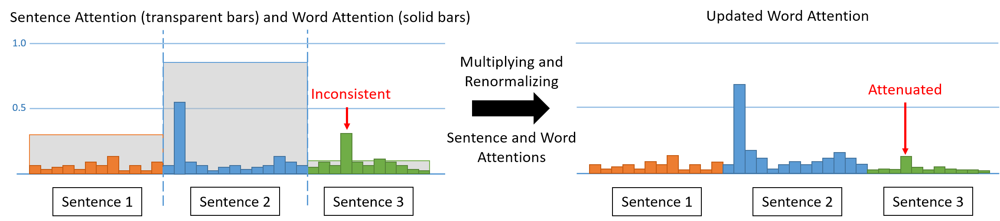
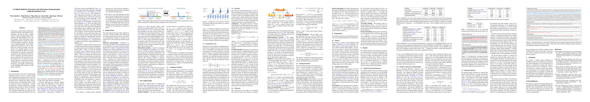

Abstract

We propose a unified model combining the strength of extractive and abstractive summarization. On the one hand, a simple extractive model can obtain sentence-level attention with high ROUGE scores but less readable. On the other hand, a more complicated abstractive model can obtain word-level dynamic attention to generate a more readable paragraph. In our model, sentence-level attention is used to modulate the word-level attention such that words in less attended sentences are less likely to be generated. Moreover, a novel inconsistency loss function is introduced to penalize the inconsistency between two levels of attentions. By end-to-end training our model with the inconsistency loss and original losses of extractive and abstractive models, we achieve state-of-the-art ROUGE scores while being the most informative and readable summarization on the CNN/Daily Mail dataset in a solid human evaluation.

@InProceedings{hsu2018unified,
title={A Unified Model for Extractive and Abstractive Summarization using Inconsistency Loss},
author={Hsu, Wan-Ting and Lin, Chieh-Kai and Lee, Ming-Ying and Min, Kerui and Tang, Jing and Sun, Min},
booktitle={Proceedings of the 56th Annual Meeting of the Association for Computational Linguistics (Volume 1: Long Papers)},
year={2018}
}
Code
Paper
Supplementary
Slides
Test set outputs
We highlight words where the reference summary focuses on in bold fonts. Our generated summary matches well with the reference summary.
| Article (original link) |
A chameleon balances carefully on a branch, waiting calmly for its prey... except that if you look closely, you will see that this picture is not all that it seems. For the 'creature' poised to pounce is not a colourful species of lizard but something altogether more human. Featuring two carefully painted female models, it is a clever piece of sculpture designed to create an amazing illusion. It is the work of Italian artist Johannes Stoetter. Scroll down for video. Can you see us? Italian artist Johannes Stoetter has painted two naked women to look like a chameleon. The 37-year-old has previously transformed his models into frogs and parrots but this may be his most intricate and impressive piece to date. Stoetter daubed water-based body paint on the naked models to create the multicoloured effect, then intertwined them to form the shape of a chameleon. To complete the deception, the models rested on a bench painted to match their skin and held the green branch in the air beneath them. Stoetter can take weeks to plan one of his pieces and hours to paint it. Speaking about The Chameleon, he said: 'I worked about four days to design the motif bigger and paint it with colours. The body painting took me about six hours with the help of an assistant. I covered the hair with natural clay to make the heads look bald.' Camouflage job: A few finishing touches are applied to the two naked models to complete the transformation. 'There are different difficulties on different levels as in every work, but I think that my passion and love to my work is so big, that I figure out a way to deal with difficulties. My main inspirations are nature, my personal life-philosophy, every-day-life and people themselves.' However, the finished result existed only briefly before the models were able to get up and wash the paint off – with just a video and some photographs to record it. (...) |
| Reference Summary |
Johannes Stoetter's artwork features two carefully painted female models. The 37-year-old has previously transformed models into frogs and parrots. Daubed water-based body paint on naked models to create the effect. Completing the deception, models rested on bench painted to match skin. |
| Our Summary |
Johannes Stoetter has painted two naked women to look like a chameleon. The 37-year-old has previously transformed his models into frogs and parrots. Stoetter daubed water-based body paint on the naked models to create the multicoloured effect, then intertwined them to form the shape of a chameleon. |
More examples can be found in the supplementary material and our test set outputs.